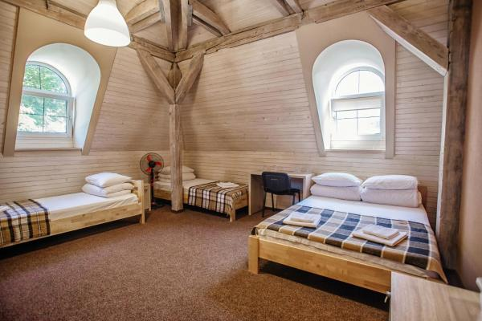
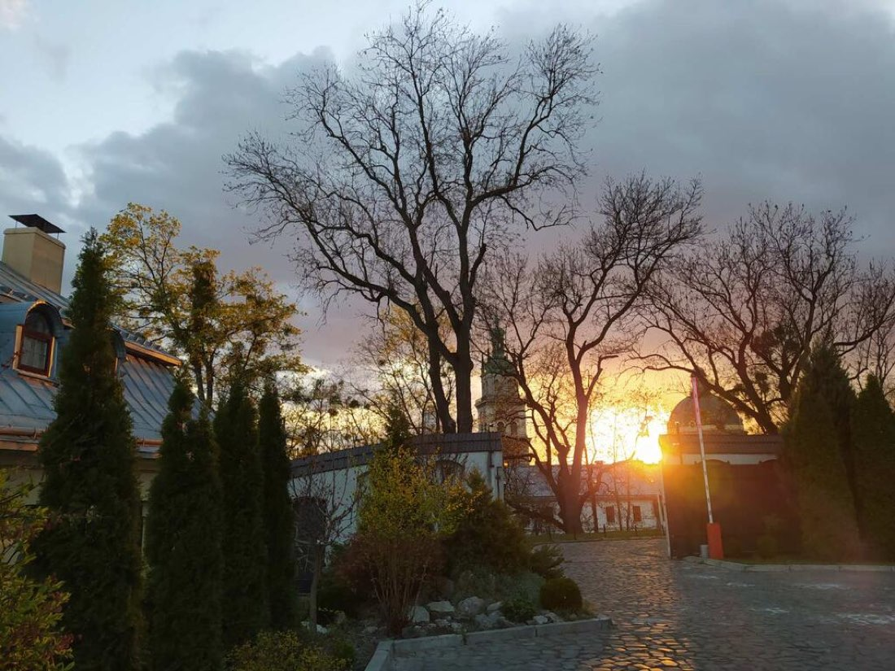
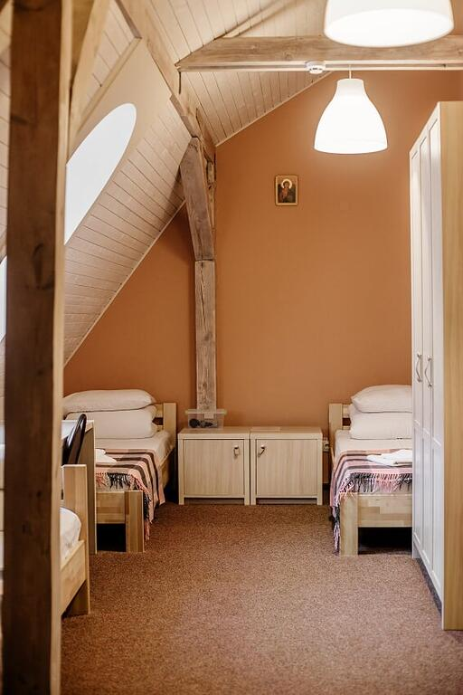
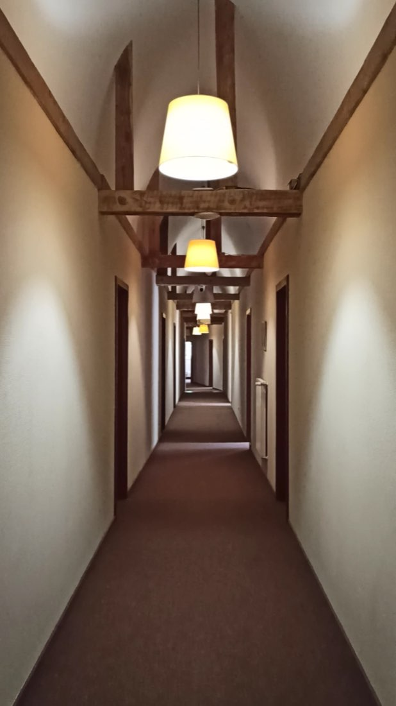
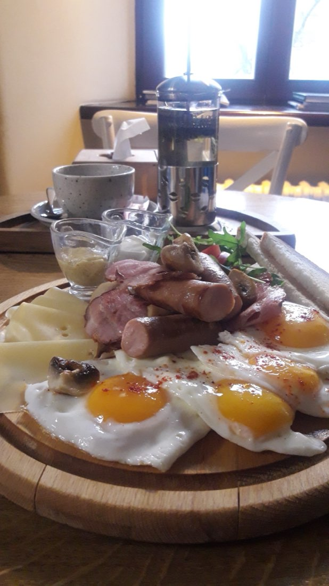
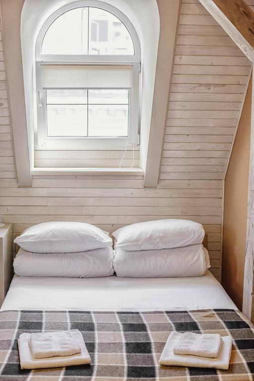
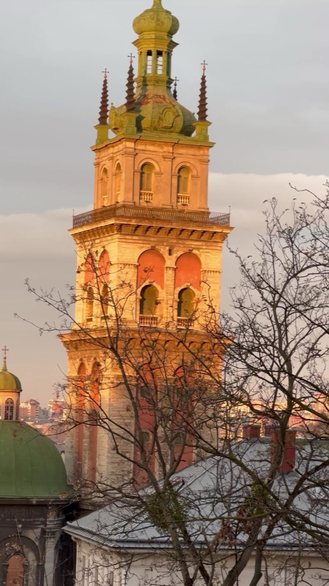
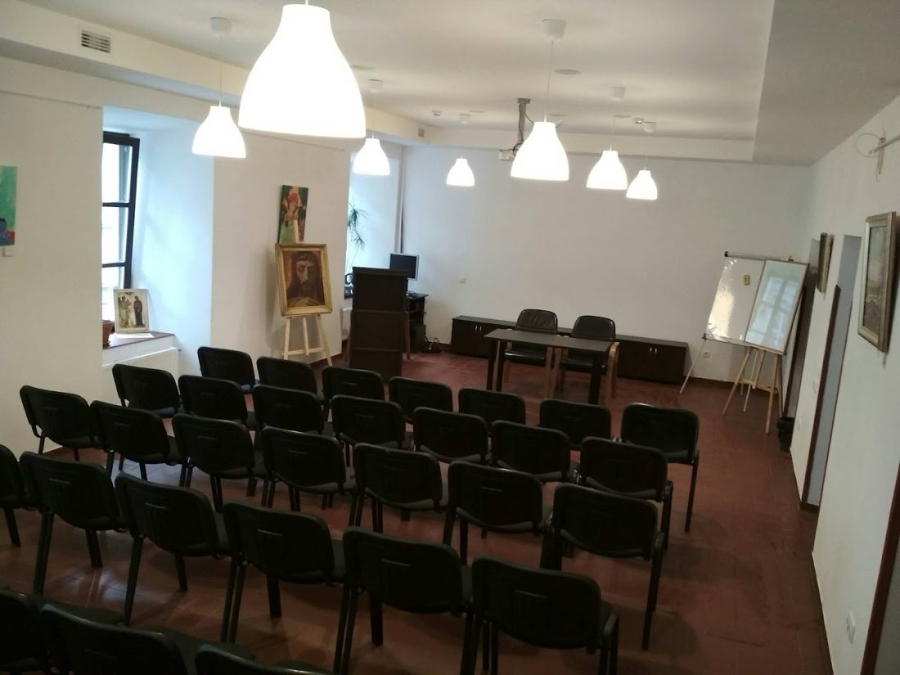

Номер на чотирьох
до 4 гостей · 1 двоспальне і 2 односпальні ліжка
Світлий мансардний номер із картатими пледами. Напишіть дати, і ми підтвердимо ціну.
- Світлі дерев'яні стіни
- Дві арочні вікна

Гості пишуть про тишу, чистоту й теплі номери. Центр поруч, але без туристичної метушні.
★ 4.8 · 393 відгуків Google · Безкоштовні Wi-Fi і парковка · Кафе в цій же будівлі · Вода, чай і кава на поверсі







до 4 гостей · 1 двоспальне і 2 односпальні ліжка
Світлий мансардний номер із картатими пледами. Напишіть дати, і ми підтвердимо ціну.
до 2 гостей · 1 двоспальне ліжко
Теплий мансардний номер з дерев'яними балками. Напишіть дати, і ми підтвердимо ціну.
до 2 гостей · 1 двоспальне ліжко
Двоспальне ліжко під арковим вікном, у номері є рушники. Напишіть дати, і ми підтвердимо ціну.
до 2 гостей · 2 односпальні ліжка
Мансардний номер для двох гостей. Напишіть дати, і ми підтвердимо ціну.
Несподіване місце для ночівлі. Інтер'єр дуже аскетичний, бо це переобладнані келії, але спиться тут чудово. Дуже чисто. Унизу є непогане кафе, де можна недорого поїсти.
Дуже сподобалося. Чисто, акуратно, тихо. М'які ліжка. Персонал привітний. Швидко відповідають. Ціна приємно здивувала.
Чудове місце. Зручно розташоване, центр у пішій доступності. Уважний персонал. У номері було тепло.
Тихо, у самому центрі. Чисто, своя закрита парковка. Персонал дуже привітний. У номері ванна й туалет.
Напишіть дати й кількість гостей, і ми підтвердимо наявність та ціну.
Зателефонуємо або напишемо найближчим часом. Якщо зручніше, напишіть нам самі:
Так, безкоштовна. Гості пишуть, що парковка своя й закрита. Заїзд через територію церкви.
Так, безкоштовний.
Сніданків немає, але в цій же будівлі є кафе.
Напишіть дати, і ми підтвердимо ціну. Гості пишуть, що ціна приємно здивувала.
Гостинний дім на території церкви. Заїзд з вулиці Винниченка, 22: гості пишуть, що їх зустрічали й показували номер.
вул. Володимира Винниченка, 20А, Львів
вул. Володимира Винниченка, 20А, заїзд з Винниченка, 22. Центр міста в пішій доступності.